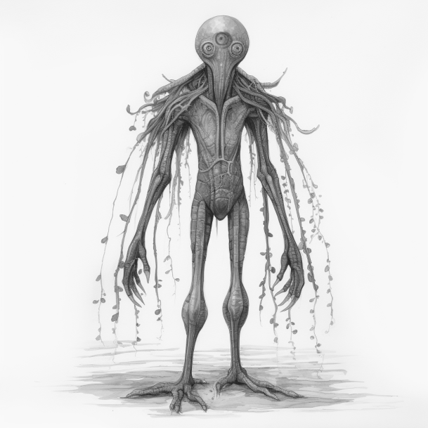

The Entity Archive
Gnawback

Names: Gnawback
Classification: Mammalian
Form of locomotion: Bipedal
Behaviour: Hostile
Diet: Carnivorous
Year Found: 1920
Gnawbacks have been popping up for decades, initially being found not that long after The Briarwood Institute came into existence. The first Gnawback was found near Cardiff, though they have continued to appear all over Britain. However, most of them appear near Cardiff for some unknown reason. They're hostile to any living thing that comes near them, though they do seem to feel some form of fear. They're durable and fast, though are unable to swim. There seems to be some kind of link between the Gnawbacks, as some have been shown to whimper when another Gnawback has been hurt, even when they didn't see it happen.
Triflorimycotoculus, "Plant Thing"

Names: Triflorimycotoculus, "Plant Thing"
Classification: Sentient Carnivorous Plant / Fungi
Form of locomotion: Bipedal
Behaviour: Hostile
Diet: Most types of meat, usually human
Year Found: 2055
Initially discovered near the Enigma Enhancements Birmingham facility, seemingly to do with the incident currently underway at said facility. The creature is seemingly a mutated and enhanced collection of plants and fungi, presumably carnivorous plants as the creature's diet consists of meat and nothing else. The creature displays hostile and erratic behaviour and has been shown to attack anybody that comes near. It seems that the creature does have some vital components as gunfire easily takes it out. Luckily, these creatures are uncommon.
"Hydeborg", "Robot"
Names: "Hydeborg", "Robot"
Classification: Cyborg
Form of locomotion: Bipedal
Behaviour: Commonly hostile
Diet: Doesn't eat
Year Found: 2055
Initially discovered by The Briarwood Institute at a construction site. The institute were investigating the construction site after a construction worker was discovered dead, slightly burnt and with lightning scars despite not having been struck by lightning. The first "Hydeborg" was taken out by Liam O'Connor through the use of an experimental weapon. It was then discovered that the head contained the skull and brain of a human, though seemingly no other human body parts, bones, or organs. These cyborgs are typically hostile.